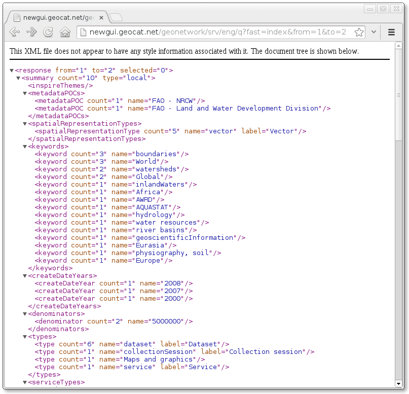

Metadata Catalog
Widgets:
First: change colors
Colors.css
Change logo
main.css:200 #logo
or replace file images/banner_logo.png
Change header and footer
main.css:81 #footer
main.css:193 #header
or replace file images/map_header.png
Change tabs
search.xsl
We can add more tabs
Average Diffulty
Partial Metadata Catalog
You choose your own widgets
Imports:
Common steps:
We can use the web-client/src/main/resources/ folder to place our files
Note: If no results are shown maybe it is because our local GN does not have any record
We may have a problem with the proxy if using another GeoNetwork
Origin is not allowed by Access-Control-Allow-Origin.
Advanced Diffulty
Mixed with your own webpage
May be incompatible with your own libraries
Very Advanced Diffulty
Don't use GeoNetwork's javascript, just server-side APIs
Your own UI from scratch
Full compatibility with your own libraries
Two options:
http://..../geonetwork/srv/eng/q
Works without parameters
Response
Parameters
We need
Create a simple form
<form id="qservice" style="display:inline-block;width:300px"> <div>Keyword:<input type="text" name="themekey"/></div> <div>Free text:<input type="text" name="any_OR_geokeyword"/></div> <div>From: <input type="number" name="from"/></div> <div>To:<input type="number" pattern="[0-9]{3}" name="to"/></div> <div><input type="button" id="submit" value="Search"/></div> </form>And use jQuery for the Ajax request:
<script> $("input#submit").click(function() { if($('form#qservice')[0].checkValidity()) { $.ajax({ url: 'http://localhost:8080/geonetwork/srv/eng/q', type: 'get', crossDomain: true, data: $('form#qservice').serialize(), success: function(data) { //TODO }});}}); </script>We will have a problem with the proxy here
Origin null is not allowed by Access-Control-Allow-Origin.
process response